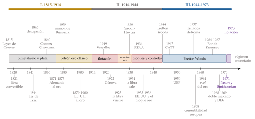
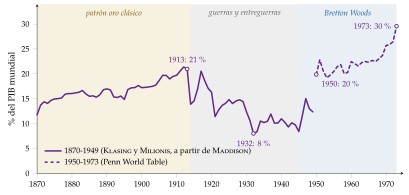
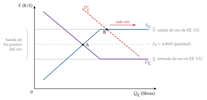
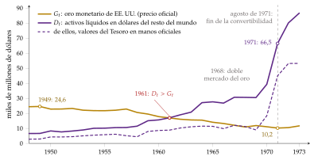

Tema 3.B.20
El sistema económico internacional desde el siglo XIX hasta la ruptura del sistema de Bretton-Woods.
Historia del sistema económico internacional de 1815 a 1973: librecambio y patrón oro, Gran Depresión, Bretton Woods, dilema de Triffin y su ruptura.
Exclusivo Material exclusivo de victorgutierrezmarcos.es y la app Oposición TCEE · DCE. Puedes usarlo libremente para tu estudio personal. No se autoriza su incorporación a otras plataformas, aplicaciones o servicios. Condiciones de uso.
Introducción
Enganche:
«No hay bien ni mal que cien años dure», dice el refrán, y el sistema económico internacional lo confirma: ninguno de sus órdenes ha llegado al siglo.
El patrón oro clásico duró unos 40 años (de los 70 del siglo XIX a 1914); el patrón de cambios-oro de entreguerras, apenas 6 (1925-1931); Bretton Woods, 27 desde su firma en 1944, y solo 13 con las monedas europeas convertibles (1958-1971).
El 15 de agosto de 1971, un domingo por la noche, Richard Nixon, presidente de Estados Unidos, anunció por televisión que su país dejaba de cambiar dólares por oro a los bancos centrales. Desde entonces ninguna gran moneda tiene detrás un metal: el dinero es fiduciario [ver tema 3.A.35].
La pregunta que recorre la exposición es: ¿por qué cada orden económico internacional, después de funcionar, acabó rompiéndose, y qué aprendió el siguiente del anterior?
Relevancia:
Para entender el presente: el GATT y la OMC, el FMI, el Banco Mundial, el papel del dólar o la desconfianza hacia los tipos fijos nacen en este periodo [ver tema 3.B.21] [ver tema 3.B.22] [ver tema 3.B.30] [ver tema 3.B.33].
Porque la historia es el laboratorio de la economía: Joseph Schumpeter contaba la historia, junto a la estadística y la teoría, entre los fundamentos del análisis económico, y Paul Samuelson1 aconsejaba a los estudiantes leerla porque da la materia prima del análisis.2 La historia económica cuantitativa tiene su Premio Nobel.3
Para no repetir errores: Carmen Reinhart y Kenneth Rogoff reconstruyen 8 siglos de crisis y encuentran siempre el mismo síntoma, la creencia de que «esta vez es distinto». Resuena la frase del filósofo madrileño George Santayana: quienes no recuerdan el pasado están condenados a repetirlo.
Para la política económica: el periodo es un catálogo de regímenes cambiarios, de políticas comerciales y de formas de cooperar (o de no hacerlo), con sus resultados a la vista [ver tema 3.B.15] [ver tema 3.B.19].
Contextualización:
La definición: el sistema económico internacional (SEI) es el conjunto de instituciones, normas y prácticas, escritas o no, que ordenan las relaciones económicas entre países.4 Su objetivo es que esas relaciones funcionen bien: que se pueda comerciar, invertir y pagar entre países.
Los 3 planos: el SEI se estudia en 3 planos muy relacionados (en la balanza de pagos, casi toda operación comercial tiene su contrapartida financiera, y mantener un tipo de cambio exige mover reservas o capital) [ver tema 3.B.11]:
el plano comercial: las reglas del comercio de bienes y servicios (aranceles, acuerdos, cláusulas);
el plano financiero: los movimientos de capital y de personas y quién financia a quién;
el plano monetario: el régimen de tipos de cambio, el activo de reserva y cómo se ajustan los desequilibrios.
Las 3 condiciones de un buen sistema monetario internacional: como se verá con Robert Triffin y con los análisis de los años 60, tiene que resolver 3 problemas:
el ajuste: corregir los desequilibrios de balanza de pagos sin hundir la actividad, lo que exige cierta flexibilidad y que el ajuste no recaiga solo en los deficitarios;
la liquidez: dar a la economía mundial los medios de pago y de reserva que necesita el comercio, ni más ni menos;
la confianza: que los agentes no esperen que el sistema se derrumbe, porque esas expectativas pueden derrumbarlo.
El periodo: hubo comercio entre pueblos desde la prehistoria (anexo A), pero el SEI como tal se forma en el siglo XIX, con la Revolución Industrial, el abaratamiento del transporte y la hegemonía británica. La exposición acaba con la ruptura de Bretton Woods (1971-1973); lo que viene después es otro tema [ver tema 3.B.21].
Problemática:
¿Qué es el sistema económico internacional y cómo evolucionó hasta 1973?
¿Cómo funcionaba el patrón oro y por qué se derrumbó en entreguerras?
¿Qué se pactó en Bretton Woods y por qué no aguantó?
¿Qué tienen en común las caídas: falta de ajuste, de liquidez o de confianza?
Estructura:
La exposición sigue el orden histórico, y en cada etapa recorre los 3 planos: comercial, financiero y monetario.
I. El sistema económico internacional hasta 1914 (I): la primera globalización, del librecambio británico y el patrón oro;
II. El sistema económico internacional de entreguerras (II): la Primera Guerra Mundial, el intento fallido de volver al oro y la Gran Depresión;
III. El sistema de Bretton Woods (III): el orden multilateral de posguerra, sus problemas y su ruptura.

Fuente: elaboración propia a partir de Eichengreen (2019) y de las fuentes citadas en el texto. El eje cambia de escala en 1914: el siglo XIX va comprimido. RTAA: ley de acuerdos comerciales recíprocos de Estados Unidos; UEP: Unión Europea de Pagos; DEG: derechos especiales de giro.
3.B.20. El sistema económico internacional desde el siglo XIX hasta la ruptura de Bretton Woods
Introducción2′30″
I. El sistema económico internacional hasta 19148′
1. Sistema comercial internacional
2. Sistema financiero internacional
3. Sistema monetario internacional: el patrón oro
II. El sistema económico internacional de entreguerras8′
1. Consecuencias de la Primera Guerra Mundial (1914-1929)
2. La Gran Depresión (1929-1939)
III. El sistema de Bretton Woods10′30″
1. Los acuerdos de Bretton Woods y su funcionamiento
2. La ruptura del sistema de Bretton Woods
Conclusión1′
Reparto del cante: introducción, 2′30″; I, 8′ (I.1, 2′; I.2, 1′30″; I.3, 4′30″); II, 8′ (II.1, 3′30″; II.2, 4′30″); III, 10′30″ (III.1, 6′30″; III.2, 4′), y conclusión, 1′. Cada etapa se cuenta con los 3 planos (comercial, financiero y monetario) y se cierra con los 3 problemas (ajuste, liquidez y confianza): es el patrón que ordena el cante. Los gráficos y figuras imprescindibles son la cronología (que se va completando), los puntos del oro y el dilema de Triffin; las funciones clave, la paridad de acuñación, la banda de los puntos del oro y la condición de Triffin. El refrán del enganche vuelve en la idea final.
I. El sistema económico internacional hasta 1914
Empezamos por el siglo XIX, cuando nace un sistema económico internacional propiamente dicho, con el Reino Unido en el centro.
Conclusión anticipada: entre 1815 y 1914 se forma la primera globalización. No hubo un tratado que la organizara: la cooperación fue de facto, no de iure. Se apoyó en 3 pilares:
un comercio cada vez más libre, aunque con vuelta atrás desde 1879;
una enorme exportación de capital y de personas desde Europa;
el patrón oro, que funcionó bien gracias a la credibilidad de los compromisos y a la hegemonía británica, más que a su mecanismo automático.
El comercio mundial pasó del 12 % del PIB mundial en 1870 al 21 % en 1913 (gráfico 1), y la movilidad del capital alcanzó un máximo que no se recuperaría hasta los años 90.

Fuente: elaboración propia a partir de Klasing y Milionis (2014) (1870-1949, con el PIB de Maddison) y de la Penn World Table de Feenstra, Inklaar y Timmer (2015) (1950-1973), en la descarga de Our World in Data (2026). Exportaciones más importaciones. Las 2 series usan fuentes distintas y no se empalman: el salto de 1949 a 1950 es de método.
I.1. Sistema comercial internacional
Las ideas: el librecambio tiene sus raíces intelectuales en los economistas británicos:
Adam Smith (1776) critica el mercantilismo y defiende la división del trabajo entre países;
David Ricardo (1817) demuestra que todos ganan comerciando según la ventaja comparativa [ver tema 3.B.5];
John Stuart Mill (1848) añade la relación real de intercambio.5
Los hitos: el camino hacia el librecambio no fue lineal, y tiene 3 hitos:6
El Tratado de Edén (1786): rebaja aranceles entre Gran Bretaña y Francia, pero las guerras con Francia (1792-1815) lo dejan sin efecto.7
Al cerrar el comercio, las guerras habían hecho crecer la producción agrícola británica.
Con la paz, los terratenientes pidieron mantener la protección y consiguieron las Leyes de Granos (Corn Laws, 1815), que gravaban el trigo importado.
La derogación de las Leyes de Granos (1846): el primer ministro Robert Peel las deroga en plena hambruna irlandesa (1845-1849), con la presión de la Liga contra las Leyes de Granos de Richard Cobden. En 1849 caen también las Leyes de Navegación. El Reino Unido se abre de forma unilateral.
El tratado de Cobden y Chevalier (1860): entre el Reino Unido y Francia, rebaja los aranceles y lleva la cláusula de nación más favorecida incondicional.
Por esa cláusula, toda rebaja arancelaria que una de las partes concede a un tercero se extiende automáticamente a la otra.8
Su efecto es multilateralizar: una red de tratados bilaterales con la cláusula extiende las rebajas a toda Europa en los años 60 del siglo XIX, y con ellas la cooperación en otros campos (ferrocarriles, telégrafos, la Unión Monetaria Latina de 1865).
La vuelta al proteccionismo desde 1879: la llegada de cereal barato de América y Rusia, por el vapor y el ferrocarril, y la depresión de 1873-1896 llevan a proteger la agricultura y las industrias nacientes:
el arancel del «hierro y el centeno» de Bismarck en Alemania (1879), el arancel McKinley en Estados Unidos (1890) y el arancel Méline en Francia (1892);
detrás pesan también razones políticas: la formación de los Estados nación (Alemania e Italia) y su deseo de industrializarse.9
El Reino Unido, en el centro: se mantuvo librecambista hasta 1914. Fue el primer país industrial, por razones que se siguen discutiendo (para Robert Allen, unos salarios altos y una energía barata, el carbón, que hacían rentable mecanizar).10
El resultado: la primera globalización. El comercio mundial creció más deprisa que la producción (gráfico 1) y, con él y con la emigración, convergieron los precios de los bienes y los salarios reales del Viejo y del Nuevo Mundo, como predice la teoría de Heckscher y Ohlin11 [ver tema 3.B.5] [ver tema 3.B.18].
I.2. Sistema financiero internacional
Los flujos de capital: el Reino Unido tenía superávits corrientes casi todos los años y los prestaba al exterior desde Londres, el gran centro financiero.
El capital fue a sus colonias y dominios, a Europa (primero Francia y Holanda, luego Alemania y Rusia) y, sobre todo, a América (Estados Unidos, Canadá, Argentina) y a Australia.
Francia y Alemania también exportaban capital, Francia sobre todo a Rusia.
Los activos exteriores llegaron a ser cerca de una quinta parte del PIB mundial hacia 1900-1914, un nivel que no se recuperó hasta los años 80.
Su forma: sobre todo bonos de Estados y de compañías de ferrocarril, puertos y servicios públicos (inversión en cartera), que financiaban las infraestructuras que abarataban el transporte de mercancías; la inversión directa de empresas multinacionales fue creciendo a finales del siglo.
Las personas: unos 60 millones de europeos emigraron a América entre 1820 y 1914, sin apenas restricciones a la entrada [ver tema 3.B.18].
La cooperación entre bancos centrales: en momentos de tensión, unos bancos centrales prestaban oro a otros para sostener la paridad (el Banco de Francia al de Inglaterra en la crisis de Baring de 1890).
La relación con el plano monetario: los préstamos a largo plazo de los países acreedores y los movimientos de capital a corto plazo atraídos por el tipo de interés hacían que el patrón oro se ajustara con mucho menos oro del que exigiría su teoría.
I.3. Sistema monetario internacional: el patrón oro
a) Idea
El problema: para comerciar entre países hace falta un medio de pago que todos acepten. Los metales preciosos lo eran por su valor intrínseco, y durante siglos convivieron el oro y la plata.
Del bimetalismo al oro: en el bimetalismo la unidad monetaria se define en oro y en plata a la vez, con una relación fija entre ambos (en Francia, desde 1803, 15,5 de plata por 1 de oro).
Cuando el precio de mercado de los metales se aparta del oficial, se cumple la ley de Gresham: «la moneda mala expulsa a la buena». Circula el metal sobrevalorado y el infravalorado se atesora o se exporta.12
El Reino Unido estaba de facto en el oro desde 1717, cuando Isaac Newton, director de la Casa de la Moneda, fijó la guinea de oro en 21 chelines y sobrevaloró el oro: la plata salió del país.13
El resto lo adoptó en los años 70 del siglo XIX: Alemania en 1871-1873, con la indemnización francesa de la guerra; la Unión Monetaria Latina y los Países Escandinavos dejan de acuñar plata; Estados Unidos lo hace de facto en 1879 y por ley en 1900; Rusia y Japón, en 1897. La plata se depreció con los nuevos yacimientos y las conferencias monetarias internacionales (1867, 1878, 1881 y 1892), que buscaban salvar el bimetalismo, fracasaron.14
Por qué contamos este modelo: el patrón oro clásico (de los años 70 del siglo XIX a 1914) es el primer sistema monetario internacional y la referencia con la que se comparan todos los demás.
b) Modelo
i) Supuestos
Las reglas del juego (así las llamó Keynes en 1925) que se comprometían a cumplir las autoridades monetarias:
Paridad fija con el oro: cada moneda vale una cantidad fija de oro, y la paridad no se cambia.
Convertibilidad plena: el banco central compra y vende oro sin límite a esa paridad; los billetes son certificados de depósito de oro.
Libre circulación del oro entre países.
No esterilizar: la cantidad de dinero se mueve con las reservas de oro (el banco central no crea dinero sin oro que lo respalde), con el multiplicador del dinero dado [ver tema 3.A.36].
Facilitar el ajuste con el tipo de descuento: si sale oro, subirlo; si entra, bajarlo.
ii) Desarrollo
La paridad de acuñación: si cada moneda vale una cantidad fija de oro, el tipo de cambio entre 2 monedas queda fijado por el cociente de los precios del oro. Con el tipo directo \(E\) visto desde Nueva York (dólares por libra) [ver tema 3.B.13]:
\[E_0=\frac{P_{\mathrm{oro}}^{\$}}{P_{\mathrm{oro}}^{\pounds}}=\frac{20{,}67\ \$\ \text{por onza}}{4{,}2477\ \pounds\ \text{por onza}}=4{,}8665\ \$/\pounds\tag{1}\]
donde los precios son los de la onza de oro fino.15
Los puntos del oro: el tipo de mercado no se aleja de la paridad más que el coste de mandar oro de un país a otro (flete, seguro e intereses perdidos durante el viaje), \(c\), porque a partir de ahí conviene arbitrar con oro:
\[\underline E=E_0\,(1-c)\ \leq\ E\ \leq\ \overline E=E_0\,(1+c)\tag{2}\]
En el punto de salida del oro de Estados Unidos, \(\overline E\), quien necesita libras prefiere comprar oro en Nueva York, mandarlo a Londres y cambiarlo allí: la oferta de libras se vuelve horizontal y el tipo no sube más.
En el punto de entrada del oro, \(\underline E\), ocurre lo contrario: la demanda de libras se vuelve horizontal.
Dentro de la banda, el tipo lo fijan la oferta y la demanda de divisas, sin movimientos de oro (gráfico 2). La banda era estrecha (menos del 1 % a cada lado en el dólar-libra) y casi siempre se respetó.16

El ajuste de la balanza: el mecanismo flujo-especie: David Hume (1752) explicó por qué, con estas reglas, la balanza se ajusta sola. El país con déficit pierde oro, se contrae su cantidad de dinero, bajan sus precios, gana competitividad (se deprecia en términos reales con el tipo nominal fijo) y el déficit se corrige; en el país con superávit pasa lo contrario. El desarrollo, con sus supuestos y su gráfico, está en el tema de los mecanismos de ajuste [ver tema 3.B.12].17
La estabilidad de precios a largo plazo: el nivel de precios queda atado al valor del oro en bienes, que depende de la oferta y la demanda de oro.18 No había inflación persistente, pero sí largas oscilaciones:
deflación de 1873 a 1896, cuando la producción de oro creció menos que la economía y más países se pasaron al oro;
inflación suave de 1896 a 1914, con el oro de Sudáfrica (Witwatersrand, 1886) y del Klondike (Canadá, 1896) y la cianuración, que abarató extraerlo.
iii) Implicaciones
El tipo de cambio fijo y la libertad de capitales se pagan con la renuncia a la política monetaria propia: es el lado del trilema que eligió el patrón oro [ver tema 3.B.15].19
Las ventajas:
estabilidad interna: no se puede imprimir dinero sin oro, y se evitan las inflaciones de la financiación monetaria, algo importante cuando se extendía el papel moneda, que no cuesta casi nada imprimir;
estabilidad externa: sin riesgo de cambio, el comercio y la inversión internacionales se abaratan;
credibilidad: es una regla con cláusula de escape. Se podía suspender en guerra, pero todos sabían que se volvería a la misma paridad, y por eso los mercados prestaban a los Estados en apuros a tipos bajos.
Los inconvenientes:
c) Extensiones
El patrón de cambios-oro: los países pequeños y las colonias (la India, Japón, Rusia en parte) guardaban sus reservas en libras o en otras monedas convertibles en lugar de en oro. Ahorraba oro, pero hacía al sistema depender de la confianza en las monedas de reserva: es el germen de los problemas del siglo XX (II.1).
El director de orquesta: Keynes llamó al Banco de Inglaterra «el director de la orquesta internacional». Le bastaban unas reservas de oro pequeñas porque una subida de su tipo de descuento atraía capital de todo el mundo hacia Londres.
d) Evidencia empírica
Las reglas se incumplían: Arthur Bloomfield (1959) comparó, año a año entre 1880 y 1914, los activos internacionales y los internos de una decena de bancos centrales. En el 60 % de los casos se movieron en sentido contrario: los bancos centrales esterilizaban los flujos de oro, en contra de la regla 4.
El ajuste no lo hacía el oro, sino el capital: subir el tipo de descuento atraía capital a corto plazo y financiaba el déficit sin que saliera mucho oro; los flujos de oro fueron pequeños en comparación con los desequilibrios.
El ajuste fue más por renta que por precios: la subida de tipos frenaba la inversión y la renta, y así las importaciones; los precios bajaban poco y despacio [ver tema 3.B.12].22
Funcionó mejor en el centro que en la periferia: Europa del noroeste mantuvo la paridad; América Latina y el sur de Europa (España no llegó a adoptarlo) la suspendieron a menudo, con crisis de deuda como la de Argentina en 1890 [ver tema 3.B.17].
e) Valoración
El patrón oro funcionó hasta 1914 más por la credibilidad y la cooperación que por su mecanismo automático:
la credibilidad: nadie dudaba de que el Banco de Inglaterra defendería la paridad, porque no había presiones políticas para lo contrario. El sufragio era restringido, los sindicatos débiles y nadie esperaba que el banco central cuidara del empleo;
la cooperación: en las crisis, los bancos centrales se prestaban oro.
Sus debilidades: el ajuste no era ni automático (los precios eran rígidos) ni simétrico (cargaba sobre los deficitarios), y dependía de un centro, Londres, y de que la política no pidiera otra cosa.
El puente: cuando la Primera Guerra Mundial rompió la cooperación y la democracia de masas hizo del paro un problema político, esas condiciones desaparecieron, y con ellas el patrón oro. Pasamos al periodo de entreguerras.
II. El sistema económico internacional de entreguerras
Una vez visto cómo funcionaba el orden anterior a 1914, pasamos a ver cómo se deshizo.
Conclusión anticipada: la Primera Guerra Mundial rompió las 3 condiciones del patrón oro (la hegemonía británica, la cooperación y la prioridad del equilibrio externo). El intento de volver a él en los años 20 sin esas condiciones fracasó y transmitió la Gran Depresión a todo el mundo. En los 30, cada país buscó salvarse solo, con aranceles, devaluaciones competitivas y controles, y el comercio mundial se hundió hasta el 8 % del PIB en 1932 (gráfico 1).
II.1. Consecuencias de la Primera Guerra Mundial (1914-1929)
II.1.1. Consecuencias económicas y financieras
El cambio de hegemonía: Europa salió arruinada de la guerra (1914-1918), y Estados Unidos, con su aparato productivo intacto, pasó de deudor a acreedor del mundo.
En Estados Unidos: los «felices años 20», con un fuerte crecimiento y una gran inversión directa en Europa, que dio origen a multinacionales en las comunicaciones y el automóvil.
En los países europeos vencedores: un auge de reconstrucción hasta 1920 y después paro, por el coste de pasar de una economía de guerra a otra de paz. El Reino Unido perdió el liderazgo.
En los países vencidos (Alemania, Austria, Hungría, Bulgaria) hubo 3 problemas:
la inflación, porque el Estado se financió imprimiendo dinero;
la escasez, por la destrucción del aparato productivo;
las reparaciones de guerra: el Tratado de Versalles (1919)23 declaró a Alemania culpable de la guerra y la obligó a indemnizar a los vencedores; en 1921, la Comisión de Reparaciones fijó la deuda en 132.000 millones de marcos oro.24
El problema de las transferencias: para pagar en divisas, Alemania necesitaba superávits comerciales, que el proteccionismo de los vencedores impedía. Se endeudó en el exterior y monetizó el déficit:
tras la ocupación del Ruhr por Francia y Bélgica (1923), la hiperinflación se desbocó: el dólar, que valía 4,2 marcos en 1914, pasó a valer 4,2 billones de marcos en noviembre de 1923, cuando se estabilizó con el Rentenmark;
lo mismo, a menor escala, en Austria, Hungría y Polonia: todas acabaron cuando un cambio de régimen fiscal y monetario creíble frenó la emisión [ver tema 3.A.39].
Las soluciones de la comunidad internacional:
el Plan Dawes (1924): un calendario de pagos creciente y un préstamo internacional de 800 millones de marcos oro (unos 200 millones de dólares), más de la mitad suscrito en Estados Unidos;25
el Plan Young (1929): rebajó la deuda a unos 112.000 millones de marcos en 59 años, alargó los plazos, redujo el control internacional sobre las finanzas alemanas y creó en 1930 el Banco de Pagos Internacionales (Basilea) para canalizar los pagos;
los pagos se suspendieron con la moratoria Hoover (1931) y se cancelaron en la práctica en la Conferencia de Lausana (1932).26
Estos planes son los antecedentes de las reestructuraciones de deuda soberana posteriores, como el Plan Brady de 1989 [ver tema 3.B.29].
II.1.2. Consecuencias comerciales
La guerra puso fin a la primera globalización:
vuelve el proteccionismo: los aranceles suben en casi todas partes y el comercio en porcentaje del PIB no recupera en los años 20 el nivel de 1913 (gráfico 1);
la regionalización: surgen bloques comerciales, como el del Reino Unido con su imperio;
los desequilibrios: Europa tiene un fuerte déficit comercial para reconstruirse, financiado con capital estadounidense. Cuando ese capital se corta en 1928-1929, el ajuste se vuelve imposible.
Estados Unidos, ya el gran acreedor, subió sus aranceles en 1922 (arancel Fordney-McCumber): sus deudores tenían que pagarle en dólares, pero se les cerraba el mercado donde ganarlos.
II.1.3. Consecuencias monetarias: el patrón de cambios-oro
El fin del patrón oro clásico: en la guerra, los países suspendieron la convertibilidad y prohibieron exportar oro para financiar el gasto militar imprimiendo dinero. Con la paz, los tipos de cambio flotaron y fluctuaron con fuerza, y todos quisieron volver a la estabilidad del oro.
La Conferencia de Génova (1922): temiendo que no hubiera oro suficiente para todos, recomendó un patrón de cambios-oro: los países guardarían como reservas no solo oro, sino también divisas de las grandes economías convertibles en oro (la libra y el dólar).
La vuelta:
Estados Unidos volvió al oro en 1919, a la paridad de antes de la guerra;
el Reino Unido, en 1925, también a la paridad de antes (4,86 dólares por libra), por decisión de Winston Churchill, ministro de Hacienda, y con un patrón lingotes-oro que solo convertía grandes cantidades;27
Francia estabilizó el franco en 1926 a una quinta parte de su valor de antes (de derecho, en 1928), una paridad infravalorada que le dio superávits y oro;
hacia 1927 casi todos los países habían vuelto al oro.
El error de la libra: la paridad de antes de la guerra exigía bajar precios y salarios británicos en torno a un 10 %, y Keynes lo criticó en Las consecuencias económicas del señor Churchill (1925): el ajuste se haría por el paro.28
Por qué falló: se intentó volver al mundo de antes de 1914 cuando sus condiciones ya no existían:
sin centro: el Reino Unido ya no podía hacer de ancla y Estados Unidos, el nuevo centro, no quería: su economía era más cerrada e inestable, y la Reserva Federal (creada en 1913) miraba a la economía interna;
sin cooperación: no hubo un acuerdo que formalizara el sistema, y Francia y Estados Unidos acumularon oro sin dejar que expandiera su dinero (lo esterilizaron), con lo que exportaron deflación al resto;
sin credibilidad: con el sufragio universal y los sindicatos, el paro pesaba más que la paridad, y los mercados lo sabían; el capital pasó de estabilizar a desestabilizar;
con poca liquidez y mal repartida: las divisas de reserva (la libra) eran tan sólidas como la confianza en sus emisores.
II.2. La Gran Depresión (1929-1939)
II.2.1. Idea
La Gran Depresión fue una crisis mundial que empezó en Estados Unidos en 1929 y, a través del patrón de cambios-oro, se extendió al resto del mundo.
La recesión estadounidense empezó en agosto de 1929 y se agravó con el crac de la Bolsa de Nueva York en octubre (el «martes negro», 29 de octubre).
Fue de una intensidad desconocida:29
en Estados Unidos, el PIB real cayó un 26 % y los precios un 25 % de 1929 a 1933, y el paro llegó al 25 % en 1933;
la producción industrial estadounidense cayó a la mitad del pico al fondo;
el comercio mundial, en valor, se redujo a un tercio: las importaciones de 75 países pasaron de unos 3.000 millones de dólares oro al mes en enero de 1929 a menos de 1.000 en enero de 1933 (la «espiral» de Kindleberger).
II.2.2. Causas
Los motivos de fondo: hay debate, y las explicaciones se complementan.
Una crisis de sobreproducción (por el lado de la oferta): los países que no estuvieron en guerra crearon industria y agricultura para sustituir a Europa; cuando Europa volvió a producir, hubo exceso de oferta, sobre todo de productos primarios (buenas cosechas desde 1925), y los precios agrícolas cayeron desde antes de 1929.30
Una crisis de demanda (la lectura keynesiana): los salarios crecieron menos que la productividad y la inversión se hundió con el cambio de expectativas; el consumo de productos primarios crece menos que la renta (ley de Engel). La salida es la intervención pública para sostener la demanda [ver tema 3.A.4].
Lo que la agravó:
la política monetaria: para Milton Friedman y Anna Schwartz (1963), la Reserva Federal convirtió una recesión en depresión al dejar caer la cantidad de dinero un 35 % entre 1929 y 1933 y no frenar los pánicos bancarios como prestamista de última instancia [ver tema 3.A.5].31 La base monetaria no cayó; cayó el multiplicador del dinero, porque el público retiró depósitos y los bancos guardaron más reservas [ver tema 3.A.36];
el sistema bancario: más de una quinta parte de los bancos comerciales estadounidenses suspendió pagos. Ben Bernanke (1983) añadió que las quiebras destruyeron la información y las relaciones de crédito de los bancos, y que eso alargó la depresión por sí mismo [ver tema 3.B.26];32
la deflación por deudas: según Irving Fisher (1933), al caer los precios aumentaba el valor real de las deudas, los deudores vendían activos y recortaban gasto, y los precios caían más [ver tema 3.B.26];
la política fiscal: la ortodoxia del presupuesto equilibrado llevó a subir impuestos y recortar gasto en plena caída (Estados Unidos subió los impuestos en 1932).
El detonante: el crac bursátil. El índice Dow Jones cayó un 12 % el 29 de octubre de 1929 y, del máximo de 1929 al mínimo de 1932, perdió casi el 90 % de su valor.
II.2.3. Propagación: el patrón oro como correa de transmisión
El patrón de cambios-oro transmitió la crisis a todo el mundo: es la tesis de Barry Eichengreen en Golden Fetters («grilletes de oro»).
Para defender la paridad, los países que perdían oro tenían que subir tipos y contraer el dinero justo cuando su economía caía: el oro les impedía reflotarla.
Estados Unidos y Francia, que acumulaban oro, no expandían su dinero: el ajuste caía entero sobre los demás.
Los canales hacia Europa:
la financiación exterior: los préstamos de Estados Unidos se cortaron desde 1928 y se repatrió el capital invertido en Europa;
el comercio: Estados Unidos importó menos, y la producción europea cayó;
los bancos: la quiebra del Credit-Anstalt de Viena (mayo de 1931) desató pánicos en Austria, Hungría y Alemania, cuyos bancos, muy ligados a la industria, estaban débiles por las reparaciones; de ahí, a Londres.
La caída de la libra (septiembre de 1931): los tenedores de libras dudaron de que el Reino Unido, con un 20 % de paro, aguantara la paridad subiendo tipos, y la vendieron en masa. El 21 de septiembre el Reino Unido suspendió la convertibilidad.
Fue una crisis de segunda generación: las reservas no se habían agotado, pero el coste de defender la paridad (el paro) era tan alto que los mercados esperaban, con razón, que el gobierno la abandonara [ver tema 3.B.17].33
II.2.4. Salida y consecuencias
Salir del oro fue la salida: los países que abandonaron antes el patrón oro y devaluaron se recuperaron antes, porque pudieron bajar tipos y expandir el dinero :
el Reino Unido y los países escandinavos en 1931;
Estados Unidos en 1933: Franklin D. Roosevelt prohibió exportar oro y en enero de 1934 devaluó el dólar de 20,67 a 35 dólares la onza;
el bloque oro (Francia, Bélgica, Países Bajos, Suiza, Italia, Polonia) aguantó hasta 1935-1936, y fue el que más tardó en recuperarse.
El New Deal (1933-1938) de Roosevelt, con sus «3 R»: recovery (recuperación), relief (alivio de los más afectados) y reform (reformas para el largo plazo).34 En Alemania, el gobierno nazi aplicó una política expansiva dirigida al rearme, con controles de cambios.
En el plano comercial: el proteccionismo se recrudeció.
La Ley Smoot-Hawley (junio de 1930) subió los aranceles de Estados Unidos: el arancel medio sobre las importaciones con derechos llegó al 59 % en 1932, en parte porque los derechos eran fijos por unidad y los precios caían.35
Los demás respondieron: el Reino Unido abandonó el librecambio (1932) y creó la preferencia imperial en Ottawa (1932); se multiplicaron los contingentes y los acuerdos bilaterales de compensación.
En 1934, Estados Unidos aprobó la Ley de Acuerdos Comerciales Recíprocos (RTAA), que rebajaba aranceles con la cláusula de nación más favorecida: es el antecedente del GATT.
En el plano financiero: se hundieron las bolsas y los bancos, el crédito internacional se cortó (en 1931-1932 hubo una ola de impagos de deuda soberana en América Latina y Europa central) y se generalizaron los controles de capital. Llegó la regulación financiera:36
la Ley Glass-Steagall (1933) creó la garantía federal de depósitos y separó la banca comercial (depósitos y préstamos) de la de inversión (negociación de valores);
la Comisión de Bolsa y Valores (1934) y la Regulación Q, que fijaba un tope al tipo de interés de los depósitos [ver tema 3.B.27].
En el plano monetario: desapareció el patrón de cambios-oro y llegó la inestabilidad cambiaria.
Las devaluaciones competitivas buscaban exportar el paro al vecino, y se anularon unas a otras [ver tema 3.B.12];
el mundo se partió en bloques: el área de la libra, el bloque oro, el área del dólar y la Europa central de los controles de cambios alemanes.
El Acuerdo Tripartito (1936) entre Estados Unidos, el Reino Unido y Francia, para no devaluar unos contra otros, fue el primer intento de cooperación.
La lección: Charles Kindleberger (1973) concluyó que la depresión fue tan larga porque nadie ejerció de estabilizador del sistema: el Reino Unido ya no podía y Estados Unidos aún no quería mantener abierto su mercado, prestar a contracorriente y actuar de prestamista de última instancia internacional. Proteccionismo, devaluaciones competitivas y falta de cooperación fueron el germen de la conciencia multilateral que inspira Bretton Woods.
III. El sistema de Bretton Woods
Tras el desorden de entreguerras, pasamos al primer sistema económico internacional diseñado de forma deliberada y con instituciones propias.
Conclusión anticipada: Bretton Woods resolvió los fallos de entreguerras con reglas multilaterales en los 3 planos y acompañó la mayor expansión de la historia: el PIB mundial creció un 4,9 % al año entre 1950 y 1973, frente al 2,1 % de 1870-1913. Pero su plano monetario nació con 3 problemas (ajuste, liquidez y confianza) y descansaba en el dólar. Cuando el capital volvió a moverse y Estados Unidos dejó de anteponer la paridad a sus objetivos internos, se rompió (1971-1973).
III.1. Los acuerdos de Bretton Woods y su funcionamiento
III.1.1. Contexto y cuestiones de la conferencia
La Segunda Guerra Mundial (1939-1945) destruyó buena parte del aparato productivo de Europa y de Asia. Antes de que terminara, en julio de 1944, 44 países se reunieron en Bretton Woods (New Hampshire, Estados Unidos) para diseñar el orden de posguerra.37
El espíritu de la conferencia era evitar los errores de entreguerras: el proteccionismo, las devaluaciones competitivas y la falta de cooperación. Había 3 cuestiones sobre la mesa:
cómo estimular de nuevo el comercio internacional;
cómo financiar la reconstrucción y el desarrollo;
cómo dar estabilidad a los tipos de cambio y liquidez al mundo.
Los 2 planes: Estados Unidos y el Reino Unido llevaron propuestas distintas, cada una a la medida de sus intereses (tabla 1).38 El acuerdo final se acercó más al Plan White, porque Estados Unidos era el acreedor del mundo.
| Plan White (Estados Unidos) | Plan Keynes (Reino Unido) | |
|---|---|---|
| Institución | Fondo de Estabilización con aportaciones de los países (unos 5.000 millones de dólares) | Unión Internacional de Compensación, un banco central de bancos centrales |
| Liquidez | Limitada a lo aportado; préstamos con condiciones | Crea su propia moneda, el bancor; descubiertos amplios y casi automáticos |
| Ajuste | Recae en los deficitarios | Simétrico: también pagan los acreedores, con intereses sobre sus saldos |
| Tipos de cambio | Fijos, con cambios solo excepcionales | Fijos pero ajustables, más flexibles |
| Resultado | Se impone (FMI con cuotas, dólar como reserva) | Queda la cláusula de moneda escasa |
Fuente: elaboración propia a partir de Keynes (1943) y Eichengreen (2019).
III.1.2. Los 3 pilares de Bretton Woods
El orden de posguerra se apoyó en 3 pilares, uno por cada cuestión:
el monetario-financiero: el Fondo Monetario Internacional (FMI) [ver tema 3.B.22];
el de la reconstrucción y el desarrollo: el Banco Internacional de Reconstrucción y Fomento (BIRF),39 hoy en el Grupo del Banco Mundial [ver tema 3.B.30];
el comercial: la Organización Internacional del Comercio (OIC) no llegó a nacer; quedó el Acuerdo General sobre Aranceles y Comercio (GATT, 1947), origen de la OMC (1995) [ver tema 3.B.33] [ver tema 3.B.34].
El plano comercial: del fracaso de la OIC al GATT
La OIC: la Carta de La Habana (1948) quería una organización que regulara no solo el comercio, sino el empleo, los productos básicos, las prácticas restrictivas, la inversión y los servicios. No llegó a ratificarse porque el Gobierno de Estados Unidos, su gran impulsor, no la llevó al Congreso (1950).
El GATT: en paralelo, 23 países negociaron en Ginebra una rebaja de aranceles y firmaron el GATT (30 de octubre de 1947, en vigor desde el 1 de enero de 1948).40 Nació como un acuerdo provisional, pero fue adquiriendo estructura de organización y fue la referencia del comercio mundial durante casi medio siglo.
Por qué negociar en común: los acuerdos permiten concesiones mutuas (cada país protege menos a sus industrias a cambio de que los demás protejan menos a sus exportadores), evitan las guerras comerciales (un equilibrio cooperativo en un juego repetido) y reducen los costes de transacción [ver tema 3.B.7].
Sus principios:
no discriminación: la cláusula de nación más favorecida (art. I), con 2 excepciones, las uniones aduaneras y áreas de libre comercio (art. XXIV) y el trato preferente a los países en desarrollo (desde 1979, la cláusula de habilitación), y el trato nacional (art. III): una vez pasada la aduana, el producto importado se trata como el nacional;41
transparencia: se notifican aranceles, subvenciones y medidas;
liberalización progresiva, por rondas de negociación;
prohibición de las restricciones cuantitativas (art. XI), con excepciones (agricultura, balanza de pagos).
Sus avances: 5 rondas hasta 1961 y la Ronda Kennedy (1964-1967), que rebajó en torno a un 35 % los aranceles industriales [ver tema 3.B.33]. España se adhirió en 1963 [ver tema 4.A.27].
El regionalismo: la Guerra Fría y la reconstrucción impulsaron la integración regional [ver tema 3.B.35]:
en el Oeste, la Comunidad Europea del Carbón y del Acero (Tratado de París, 1951) y la Comunidad Económica Europea (Tratados de Roma, 1957) [ver tema 3.B.36], y la Asociación Europea de Libre Comercio (1960);
en el Este, el Consejo de Ayuda Mutua Económica (CAME o COMECON, 1949), en respuesta al Plan Marshall, con una división del trabajo planificada desde Moscú;42
el resto del mundo, cada vez con menos peso en el comercio mundial.
El plano financiero: el BIRF, el Plan Marshall y los controles
El BIRF financiaba la reconstrucción y, después, el desarrollo, pero sus recursos eran pequeños frente a las necesidades de Europa.
El Plan Marshall (Programa de Recuperación Europea, 1948-1952), fuera del sistema de Bretton Woods, dio unos 13.000 millones de dólares a Europa occidental, en su gran mayoría donaciones (en torno al 90 %), para comprar bienes y materias primas en Estados Unidos. Lo gestionó la Organización Europea de Cooperación Económica (OECE, 1948), origen de la OCDE (1961) [ver tema 3.B.19].
La Unión Europea de Pagos (1950-1958) compensaba en multilateral los pagos entre países europeos sin dólares: fue el paso intermedio a la convertibilidad.
Los controles de capital: el Convenio del FMI los permitía (art. VI), y casi todos los países los mantuvieron hasta los años 60 o más. Eran la pieza que permitía tipos fijos con política monetaria propia.
El plano monetario: un patrón de cambios-oro con el dólar en el centro
Las reglas (Convenio Constitutivo del FMI):
Paridades fijas pero ajustables: cada país fija una paridad en oro o en dólares y la defiende en el mercado de cambios con márgenes del \(\pm1\) %;43
El dólar, convertible en oro a 35 dólares la onza, solo para los bancos centrales: el dólar es la moneda de reserva y el ancla del sistema;
Cambios de paridad solo ante un «desequilibrio fundamental», que nunca se definió: hasta un 10 % acumulado sobre la paridad inicial sin objeción del FMI y, por encima, con su acuerdo;
Convertibilidad por cuenta corriente (art. VIII), con un periodo transitorio que en Europa duró hasta diciembre de 1958; controles de capital permitidos;
El FMI, un fondo de cuotas: cada país aporta el 25 % de su cuota en oro (o dólares) y el resto en su moneda, y la cuota fija su voto y lo que puede pedir prestado ante problemas temporales de balanza de pagos, con condiciones. Las cuotas iniciales del Convenio sumaban 8.800 millones de dólares, incluida la Unión Soviética, que no lo ratificó [ver tema 3.B.22].
Las funciones del FMI: vigilar las paridades para evitar devaluaciones competitivas, aprobar los realineamientos y prestar a corto plazo (es la parte del Plan White).
Un patrón de cambios-oro: con \(n\) monedas solo hay \(n-1\) tipos de cambio independientes. Los \(n-1\) países fijaban su moneda al dólar y el dólar se fijaba al oro: Estados Unidos, la moneda \(n\), no tenía que defender ningún tipo de cambio.
Las 2 etapas:
1946-1958, la escasez de dólares: Europa necesitaba dólares para importar y no los tenía; hubo controles, el Plan Marshall, la Unión Europea de Pagos y la gran devaluación de la libra y de otras 30 monedas en 1949;
1959-1971, el sistema en pleno funcionamiento: con la convertibilidad europea (1958), el capital empezó a moverse (nace el mercado de eurodólares en Londres) y la escasez de dólares se convirtió en exceso.
España entró en el FMI y el BIRF en 1958 y fijó una paridad de 60 pesetas por dólar con el Plan de Estabilización de 1959, que bajó a 70 en noviembre de 1967 [ver tema 4.A.27].
III.1.3. Los problemas del sistema
Se ha dicho que el sistema nació limitado: las causas de su caída estaban en el propio acuerdo. Sus problemas afectaban a las 3 condiciones de un buen sistema monetario: ajuste, liquidez y confianza.
Además, cuando el capital empezó a moverse, el sistema chocó con el trilema: tipos fijos, política monetaria propia y libertad de capitales no son compatibles a la vez. Bretton Woods había elegido el lado de los tipos fijos con política propia y controles; al relajarse los controles, sostener las paridades fue cada vez más difícil [ver tema 3.B.15].
El problema del ajuste
Los costes de intervenir: para sostener la paridad, los bancos centrales tenían que intervenir a menudo y gastar reservas, y las paridades se cambiaban tarde, porque devaluar se veía como una derrota.
Hay 3 asimetrías:
Entre deudores y acreedores: el ajuste recaía en los deficitarios, que perdían reservas y no podían aguantar indefinidamente; los acreedores podían acumular reservas sin límite.44
De los \(n-1\) tipos de cambio: Estados Unidos no tenía que intervenir y no se enfrentaba al trilema: podía tener tipo fijo, libertad de capitales y política monetaria propia (mientras le quedara oro). Los demás importaban su política monetaria.45
Del señoreaje: para conseguir dólares de reserva, los demás tenían que vender bienes y activos a Estados Unidos, que los pagaba con billetes que le costaba muy poco emitir. El ministro de Hacienda francés Valéry Giscard d’Estaing lo llamó en 1965 el privilegio exorbitante de Estados Unidos.46
El problema de la liquidez: el dilema de Triffin
a) Idea
La pregunta: ¿puede una moneda nacional ser a la vez el activo de reserva del mundo y mantener una paridad fija con el oro?
El economista belga Robert Triffin respondió que no, ante el Congreso de Estados Unidos en 1959 y en Gold and the Dollar Crisis (1960). Es la explicación más conocida de por qué cayó Bretton Woods.
b) Modelo
i) Supuestos:
un patrón de cambios-oro: el dólar, convertible en oro a una paridad fija para los bancos centrales;
la demanda de reservas crece con el comercio y la producción mundiales;
la oferta de oro monetario crece poco (la producción de oro, al precio fijo de 35 dólares, no compensa);
los demás países acumulan dólares como reservas.
ii) Desarrollo:
Si el oro no basta, la liquidez que falta solo pueden darla los dólares, y el resto del mundo solo acumula dólares si Estados Unidos tiene déficits de balanza de pagos (corrientes o de capital) persistentes.
Esos déficits aumentan los pasivos exteriores de Estados Unidos en dólares, \(D_t\), mientras su oro, valorado a la paridad, \(G_t\), no crece. Llega un momento en que no hay oro para todos:
\[D_t>G_t\ \Longrightarrow\ \text{la convertibilidad a 35 \$/onza deja de ser creíble}\tag{3}\]
A partir de ese punto, cualquier tenedor de dólares tiene razones para convertirlos antes que los demás: es la lógica de una corrida bancaria aplicada a un banco central [ver tema 3.B.26].
iii) Implicaciones:
Liquidez y confianza son incompatibles a largo plazo: si Estados Unidos corrige su déficit, falta liquidez y el mundo se frena (deflación); si no lo corrige, la liquidez mina la confianza en el dólar y el sistema cae por una crisis de convertibilidad.
La solución de Triffin: un activo de reserva supranacional, creado por el FMI y no por un país, como el bancor de Keynes. Es el antecedente de los derechos especiales de giro (DEG) de 1969.
c) Extensiones
La lectura del banco del mundo: en los años 60, otros economistas (Kindleberger, Despres y Salant) sostenían que el déficit de Estados Unidos no era un desequilibrio, sino la consecuencia de que hacía de banco del mundo: tomaba prestado a corto plazo y prestaba a largo, dando liquidez a los demás.
La versión moderna: sin oro y con tipos flexibles, el emisor de la moneda de reserva ofrece al mundo activos seguros a costa de una posición exterior deudora creciente; el dilema reaparece como riesgo para la capacidad fiscal del emisor [ver tema 3.B.21].
d) Evidencia empírica
El oro monetario de Estados Unidos alcanzó su máximo en 1949 (24.600 millones de dólares a fin de año) y bajó desde 1958; los activos líquidos en dólares del resto del mundo no dejaron de crecer y lo superaron en 1961 (gráfico 3).
En octubre de 1960 el precio del oro en Londres saltó a unos 40 dólares la onza, por encima del oficial: era la primera señal de que el mercado dudaba de la paridad.
En 1971, los activos líquidos en dólares del resto del mundo multiplicaban por más de 6 el oro de Estados Unidos.

Fuente: elaboración propia a partir de las cuentas financieras de la Reserva Federal (Z.1), con la segunda comprobación del oro en la base de datos del NBER. Fin de año. El oro, al precio oficial (35 $ la onza hasta 1971, 38 $ en 1972 y 42,22 $ en 1973). Los activos líquidos son valores del Tesoro y depósitos en Estados Unidos en poder de no residentes; en 1964 hay un salto de método en los depósitos.
e) Valoración
Acertó en lo esencial: el sistema cayó por una crisis de confianza en la convertibilidad del dólar, como predijo, y los DEG nacieron de su propuesta.
Pero no fue solo la liquidez: desde mediados de los 60, el déficit de Estados Unidos creció por su política expansiva (el gasto de la guerra de Vietnam y los programas sociales sin subir impuestos), y su inflación se exportó al resto. La liquidez dejó de faltar y pasó a sobrar.
Y la confianza cayó también por el capital: con la libertad de movimientos, las expectativas de devaluación se volvieron autocumplidas. Es el tercer problema, que vemos a continuación.
El problema de la confianza
Con la convertibilidad y el capital más libre, las expectativas pasaron a mandar: si un país tenía déficits persistentes, los agentes esperaban una devaluación y vendían su moneda para no perder, el banco central perdía reservas y la devaluación se precipitaba.
La libra se devaluó un 14,3 % en noviembre de 1967 (de 2,80 a 2,40 dólares), tras años de defenderla porque se veía como un signo de debilidad nacional.
Lo contrario pasaba con los países con superávit: el marco alemán se revaluó en 1961 (5 %) y en 1969 (9,3 %) tras entradas masivas de capital, y el franco francés se devaluó en 1969 (11,1 %).
Las crisis cambiarias, más frecuentes desde finales de los 60: la caída del pool del oro en 1968 y la de la convertibilidad en 1971 se pueden leer como ataques de primera generación contra unas reservas que se agotaban [ver tema 3.B.17]. Según el propio Krugman, fueron los que motivaron su modelo.47
III.1.4. Los factores que lo sostuvieron
Pese a todo, el sistema aguantó hasta 1971 gracias a una cooperación creciente entre bancos centrales:
el pool del oro (1961): 8 bancos centrales (Estados Unidos, el Reino Unido, Alemania, Francia, Italia, Países Bajos, Bélgica y Suiza) pusieron oro en común para vender en Londres y mantener el precio de mercado en torno a 35 dólares;48
los Acuerdos Generales para la Obtención de Préstamos (1962): los países del G-10 se comprometieron a prestar al FMI hasta 6.000 millones de dólares;
las permutas de divisas (swaps) entre la Reserva Federal y otros bancos centrales, desde 1962, contra la especulación;
la presión para no convertir: Alemania se comprometió en 1967 a no cambiar sus dólares por oro (Japón actuó igual);
los controles de capital de Estados Unidos: el impuesto de igualación de intereses (1963) y los límites a los préstamos y a la inversión directa en el exterior (1965 y 1968);
otras monedas de reserva, como el marco alemán y el franco suizo;
los derechos especiales de giro (DEG): un activo de reserva creado por el FMI con la Primera Enmienda de su Convenio (1969), que se asignó por primera vez el 1 de enero de 1970.49
La necesidad de tantos parches dejó ver las grietas, y crecieron las voces a favor de los tipos flexibles, con Milton Friedman a la cabeza desde The Case for Flexible Exchange Rates (1953).
III.2. La ruptura del sistema de Bretton Woods
III.2.1. Las expectativas de devaluación del dólar y las medidas de Nixon (agosto de 1971)
Las expectativas de devaluación del dólar crecieron desde finales de los 60 por 2 razones:
el déficit de balanza de pagos de Estados Unidos se hizo crónico y en 1971 tuvo su primer déficit comercial del siglo: se cumplían los augurios de Triffin;
la política expansiva: el gasto de la guerra de Vietnam y la recesión de 1970, que llevó a la Reserva Federal a bajar los tipos mientras Alemania y Japón los mantenían, sacaron capital de Estados Unidos y llenaron de dólares los bancos centrales europeos.
Devaluar el dólar no era fácil: cualquier país podía cambiar su paridad frente al dólar, pero Estados Unidos, por ser la moneda \(n\), solo podía hacerlo si los demás revaluaban, y muchos no querían: perdían competitividad.
Las medidas de Nixon (15 de agosto de 1971), para forzar el acuerdo:
suspender la convertibilidad del dólar en oro para los bancos centrales: se cierra la «ventanilla del oro» y el ancla del sistema desaparece;
un recargo del 10 % sobre las importaciones, hasta que los socios revaluaran;
congelar precios y salarios durante 90 días.
III.2.2. El Acuerdo Smithsonian (diciembre de 1971) y la flotación (1973)
El Acuerdo Smithsonian (18 de diciembre de 1971, en el Instituto Smithsoniano de Washington) realineó los tipos de las grandes monedas:
el dólar se devaluó frente al oro un 7,9 % (de 35 a 38 dólares la onza), y el marco, el yen, el franco belga y el florín se revaluaron frente al dólar;
las bandas se ampliaron al \(\pm2{,}25\) %;50
Estados Unidos retiró el recargo del 10 %.
No resolvió nada, solo aplazó el final: el dólar seguía sin ser convertible y la política estadounidense no cambió.
En febrero de 1973, tras nuevos ataques, el dólar se devaluó otro 10 % (42,22 dólares la onza).
En marzo de 1973, las grandes economías dejaron flotar sus monedas frente al dólar: es el fin de Bretton Woods.
La flotación se quedó: en octubre de 1973 llegó la primera crisis del petróleo, y los tipos flexibles mostraron que podían amortiguar perturbaciones reales que con tipos fijos se habrían trasladado enteras a la producción.51
El epílogo: el Comité de los 20 del FMI (1972-1974) no logró un sistema nuevo, y los Acuerdos de Jamaica (enero de 1976; en vigor con la Segunda Enmienda en 1978) legalizaron la flotación y retiraron el papel monetario del oro. Es el arranque del sistema posterior [ver tema 3.B.21].
III.2.3. Valoración: por qué cayó Bretton Woods
Cayó por los 3 problemas a la vez:
el ajuste: las paridades se cambiaban tarde y la carga recaía en los deficitarios;
la liquidez: el dilema de Triffin, que hizo depender la liquidez del déficit de Estados Unidos;
la confianza: con el capital cada vez más libre, las expectativas de devaluación se cumplían solas.
Y por la hegemonía: el sistema contaba con que Estados Unidos, el miembro más poderoso, antepusiera la estabilidad del conjunto a sus objetivos internos. Cuando en los 60 y 70 eligió una política expansiva, los demás tuvieron que escoger entre importar inflación o renunciar al tipo fijo, y la mayoría escogió lo segundo.
Su balance es bueno: dio 25 años de crecimiento rápido, liberalizó el comercio, reconstruyó Europa y Japón y dejó instituciones que siguen vivas (FMI, Banco Mundial y GATT, hoy OMC). Lo que no sobrevivió fue el plano monetario.
Conclusión
Recapitulación:
En conclusión, el sistema económico internacional desde el siglo XIX hasta 1973 es la historia de 3 órdenes (tabla 2):
en el plano comercial: el librecambio tuvo su auge a mediados del siglo XIX, retrocedió desde 1879 y se hundió en los 30, y solo con el GATT, a mediados del siglo XX, llegó un impulso multilateral duradero;
en el plano financiero: la libertad de capitales del siglo XIX dio paso a los controles de entreguerras y de Bretton Woods, que solo empezaron a relajarse en los 60;
en el plano monetario: se buscó la estabilidad cambiaria con el oro y luego con el dólar, pero ningún diseño resolvió a la vez el ajuste, la liquidez y la confianza.
Relevancia:
Los dilemas siguen vivos: el trilema, la asimetría entre acreedores y deudores, el privilegio del dólar y la versión moderna del dilema de Triffin.
Extensiones:
El «no sistema» posterior a 1973 [ver tema 3.B.21], el FMI [ver tema 3.B.22], las crisis de balanza de pagos [ver tema 3.B.17], los regímenes cambiarios [ver tema 3.B.15], la integración monetaria europea, que nació para recuperar en Europa la estabilidad perdida [ver tema 3.B.16], y la economía española de 1959-1999 [ver tema 4.A.27].
Opinión:
Los sistemas no cayeron por un mal diseño técnico, sino cuando dejaron de tener detrás la cooperación y la voluntad política que los sostenían.
Idea final:
«No hay bien ni mal que cien años dure»: ninguno de estos órdenes llegó al siglo, porque las condiciones que los hicieron posibles cambiaron más deprisa que sus reglas. La lección para la pregunta del principio es que un sistema dura mientras se adapta y mientras sus miembros cooperan; y, como enseñan los años 30, cuando los países apostaron por el librecambio y la estabilidad monetaria, llegaron la paz y la prosperidad, y cuando cada uno buscó salvarse solo, llegó la depresión.
| Plano | Hasta 1914 | Entreguerras | Bretton Woods |
|---|---|---|---|
| Comercial | Librecambio británico y nación más favorecida; proteccionismo desde 1879 | Aranceles, cuotas, bloques y bilateralismo | GATT: rondas multilaterales y regionalismo (CEE) |
| Financiero | Gran exportación de capital y emigración libres | Reparaciones, cortes del crédito, impagos y controles | BIRF y Plan Marshall; controles de capital hasta los 60 |
| Monetario | Patrón oro con centro en Londres | Cambios-oro (1925-1931), luego flotación y bloques | Paridades ajustables al dólar, dólar convertible en oro |
| Qué falló | Rigidez y asimetría del ajuste (latentes) | Ajuste, liquidez y confianza, sin cooperación | Ajuste, liquidez (Triffin) y confianza |
Fuente: elaboración propia.
A. Anexo: los orígenes de la economía
Este anexo viene del tema antiguo y no se canta: sitúa el comercio y el intercambio en la larga historia de la humanidad.
Los primeros homínidos: para saber cómo se organizaban los primeros seres humanos hay que recurrir a la arqueología y a la paleoantropología.
Los estudios genéticos sitúan los primeros homínidos hace unos 7 millones de años, y los Australopithecus ya caminaban erguidos hace unos 4 millones.
La economía humana empieza hace unos 2,5 millones de años, cuando el Homo habilis fabrica utensilios de piedra, los primeros bienes de capital, e intercambia unos productos por otros.
Hace 1,5 millones de años, el Homo erectus domina el fuego y fabrica herramientas más especializadas; sale de África hace algo más de un millón de años.
Los primeros europeos conocidos, el Homo antecessor de Atapuerca, datan de hace unos 1,2 millones de años. Según Eudald Carbonell, codirector del yacimiento, el canibalismo formó parte del proceso de humanización.
Hace unos 200.000 años se extiende por Europa el neandertal, y hace unos 40.000 años lo desplaza el Homo sapiens (Cro-Magnon), que habla, entierra a sus muertos, pinta en las cuevas y comercia con objetos traídos de muy lejos.
La caza y la recolección: durante más del 99 % de su historia, la humanidad vivió de cazar y recolectar, en grupos seminómadas de familiares cercanos.
La revolución neolítica: la agricultura empezó a practicarse hacia el 8000 a. C., de forma independiente en varios lugares de Asia, África y América. ¿Por qué se abandonó una forma de vida tan duradera?
Las técnicas agrarias se conocían mucho antes de aplicarlas: no fue ignorancia, sino elección económica.
Para Mark Cohen (La crisis alimentaria en la prehistoria), en contra de Malthus, fue la presión de la población la que obligó a buscar nuevos alimentos y llevó a la agricultura, que solo tenía una ventaja: producía más calorías por unidad de superficie.
La agricultura no exigía menos trabajo ni daba una dieta mejor o más segura: los bosquimanos, que conocían la siembra, respondían que hacerse agricultores sería una tontería con tanto alimento silvestre por recoger.
B. Anexo: preguntas de test
Preguntas tipo test del primer ejercicio: simulador de test.
Bibliografía
Paul Samuelson recibió el Premio Nobel de Economía en 1970 «por el trabajo científico con el que ha desarrollado la teoría económica estática y dinámica y ha contribuido activamente a elevar el nivel de análisis de la ciencia económica».↩︎
Keynes decía que para aprender economía había que estudiar el manual de Alfred Marshall y leer con regularidad la prensa económica. Quien la lee comprueba que los economistas recurren sin cesar a la historia para interpretar el presente: es la única fuente de conocimiento empírico a muy largo plazo. La historia económica analiza no solo las magnitudes económicas, sino todo lo que influye en el progreso de las sociedades: las instituciones, los conflictos sociales, las guerras y las revoluciones, que son como terremotos para la actividad económica.↩︎
Douglass North recibió el Premio Nobel de Economía en 1993, con Robert Fogel, «por haber renovado la investigación en historia económica aplicando la teoría económica y métodos cuantitativos para explicar el cambio económico e institucional». En 2025, Joel Mokyr lo recibió, con Philippe Aghion y Peter Howitt: ellos 2, «por la teoría del crecimiento sostenido mediante la destrucción creativa», y Mokyr, «por haber identificado los requisitos previos del crecimiento sostenido mediante el progreso tecnológico».↩︎
No es solo el sistema monetario internacional, aunque este sea el que más ha marcado las relaciones entre los países: incluye también el comercio y los movimientos de capital y de personas.↩︎
No todos los clásicos eran librecambistas: Thomas Malthus defendió las Leyes de Granos, que sostenían la renta de los terratenientes y su consumo, frente a Ricardo [ver tema 3.A.2].↩︎
El siglo XVIII, el de la Ilustración, se resume en el lema que Immanuel Kant (1784) propuso para ella: «¡Sapere aude! ¡Ten el valor de servirte de tu propia razón!». Con el país, ojo a los nombres: Gran Bretaña desde 1707 (Inglaterra y Escocia); Reino Unido de Gran Bretaña e Irlanda desde 1801; Reino Unido de Gran Bretaña e Irlanda del Norte desde 1922, cuando se separa el Estado Libre Irlandés.↩︎
Las guerras revolucionarias y napoleónicas enfrentaron a Francia con sucesivas coaliciones europeas de 1792 a 1815. Tras ellas, el Congreso de Viena (1815) inauguró el Concierto Europeo, un primer intento de seguridad colectiva. La idea de una liga de naciones que evitara la guerra la había esbozado Immanuel Kant en Sobre la paz perpetua (1795), y la hizo realidad, sin éxito, la Sociedad de Naciones (1919), antecesora de la ONU.↩︎
La cláusula de nación más favorecida es habitual en los tratados comerciales: ningún firmante recibe peor trato que el mejor tratado de los demás. Es el artículo I del GATT [ver tema 3.B.33].↩︎
Para el economista Ha-Joon Chang, los países hoy ricos, Estados Unidos y Alemania entre ellos, se industrializaron con la protección y las políticas industriales que hoy desaconsejan a los países en desarrollo: «retiran la escalera» por la que subieron. La tesis está en debate [ver tema 3.B.9] [ver tema 3.B.28].↩︎
Robert Allen lo explica en Global Economic History: A Very Short Introduction (2011), donde también estudia la gran divergencia entre Occidente y el resto del mundo. Hay un resumen suyo en vídeo: conferencia de Robert Allen.↩︎
Bertil Ohlin recibió el Premio Nobel de Economía en 1977, con James Meade, «por su contribución pionera a la teoría del comercio internacional y de los movimientos internacionales de capital».↩︎
La ley se atribuye al comerciante y financiero inglés Thomas Gresham (siglo XVI). No compara el valor de 2 metales, sino la paridad oficial con la de mercado. Ejemplo: si la paridad oficial es de 15 gramos de plata por 1 de oro, pero en el mercado bastan 13, la plata es la moneda «buena» (vale más en el mercado que en la ceca). Quien tiene una moneda de 15 gramos de plata la cambia en el mercado por \(15/13\) gramos de oro, los lleva a la ceca y obtiene más de 15 gramos de plata, y así sucesivamente: la plata no circula, se atesora, y circula el oro, la moneda «mala», aunque valga más por gramo.↩︎
La plata se exportaba y solo quedaban en circulación monedas de plata gastadas junto a las de oro. El patrón oro se hizo ley en 1816, tras las guerras napoleónicas, con 1 libra igual a 7,32 gramos de oro fino, y la convertibilidad de los billetes, suspendida desde 1797 por la guerra, se restableció en 1821. La Ley de Peel de 1844 ató los billetes del Banco de Inglaterra al oro de sus reservas [ver tema 3.A.2] [ver tema 3.B.12].↩︎
El Banco de Inglaterra compraba la onza de oro de ley (11/12 de fino) a 3 libras, 17 chelines y 10 peniques y medio (3,894 libras), lo que da 4,2477 libras por onza de oro fino; el Tesoro de Estados Unidos, a 20,67 dólares la onza de oro fino. El tema antiguo ponía como ejemplo «50 £ por onza»: no era la paridad histórica.↩︎
La lógica, con un exportador europeo que cobra en dólares y hay exceso de dólares: o vende su letra en dólares, algo por debajo de su valor, o la cobra en Estados Unidos, compra oro, lo embala, paga flete y seguro, y pierde los intereses hasta que llega. Elige lo que más le dé; el tipo al que le da igual es el punto del oro. Hay una explicación en vídeo: los puntos del oro.↩︎
El ajuste se apoya en la teoría cuantitativa. Ojo a la distinción: la ecuación de cambio, \(M\,V\equiv P\,Y\), es una identidad contable que se cumple siempre; se convierte en teoría cuando se le añaden supuestos causales (velocidad estable y producción de pleno empleo), y solo entonces el dinero que entra o sale mueve los precios [ver tema 3.A.35].↩︎
La estabilidad depende de que el precio relativo del oro sea estable. Si la paridad es de 35 $ por onza y una onza compra 1/3 de una cesta representativa, la cesta cuesta 105 $. Si se descubren grandes yacimientos y la onza solo compra 1/4 de la cesta, la cesta pasa a costar 140 $ sin que cambie la paridad: los precios suben un 33 %.↩︎
El trilema o trinidad imposible dice que un país no puede tener a la vez tipo de cambio fijo, libertad de capitales y política monetaria propia: solo 2 de las 3. Se deduce de Fleming (1962) y Mundell (1963); Robert Mundell recibió el Premio Nobel de Economía en 1999 «por su análisis de la política monetaria y fiscal con distintos regímenes cambiarios y su análisis de las áreas monetarias óptimas».↩︎
Para los clásicos no era un gran coste: creían en la tendencia automática al pleno empleo y en la neutralidad del dinero.↩︎
Los problemas de liquidez no llegaron a ser graves por 3 razones: los descubrimientos de oro de finales de siglo (Sudáfrica, 1886; Klondike, 1896); la confianza en la libra, que circulaba como sustituto del oro, y que el oro dejó de usarse en los pagos interiores (lo sustituyeron billetes y depósitos), con lo que quedó más oro para respaldar los pagos internacionales.↩︎
El ajuste no era simétrico: perjudicaba a los países con déficit, que debían subir tipos y deprimir la renta, mientras los que tenían superávit podían acumular oro sin expandir su dinero. Si el país fuerte hubiera aumentado su cantidad de dinero, el ajuste del débil habría sido menor. Muchas economías llegaron así a 1914 con fuertes desequilibrios.↩︎
El mismo tratado creó la Sociedad de Naciones (28 de junio de 1919), primera organización internacional para la paz y antecedente de la ONU. No logró resolver los problemas de los años 20 y 30.↩︎
John Maynard Keynes, que había participado en la conferencia de paz en la delegación británica y dimitió, criticó las reparaciones en Las consecuencias económicas de la paz (1919): eran impagables, arruinarían a Alemania y desestabilizarían Europa [ver tema 3.A.4]. Los acontecimientos de los años 20 y 30 le dieron en buena parte la razón.↩︎
La lógica: Estados Unidos era acreedor de los aliados por los préstamos de guerra, y los aliados solo podían pagarle si Alemania les pagaba a ellos. Mejorar la capacidad de pago alemana era la forma de cobrar. Se formó así un círculo: Estados Unidos prestaba a Alemania, Alemania pagaba reparaciones a los aliados y estos devolvían sus deudas a Estados Unidos.↩︎
El gobierno nazi, en el poder desde 1933, repudió la deuda. El Acuerdo de Londres de 1953 aplazó una parte hasta la reunificación, y Alemania pagó el último plazo de los bonos de entreguerras el 3 de octubre de 2010.↩︎
El patrón lingotes-oro solo permitía convertir billetes en lingotes de unos 400 onzas, para evitar continuas peticiones de pequeñas cantidades y ahorrar oro. Se le llamó el «patrón de los ricos».↩︎
Keynes defendía los tipos fijos por su efecto sobre el comercio, pero con margen para ajustarlos. Con la paridad sobrevalorada, el Reino Unido tuvo que subir tipos y bajar salarios: el resultado fue la huelga general de 1926 y un paro persistente. Con las clases trabajadoras organizadas y con voto, ese ajuste ya no era políticamente viable.↩︎
Entre 1929 y 1932, el PIB mundial cayó en torno a un 15 %; en la Gran Recesión de 2008-2009 cayó menos de un 1 %. Algunas economías empezaron a recuperarse a mediados de los 30, pero en muchas los efectos duraron hasta la Segunda Guerra Mundial.↩︎
Cuando empezó la Gran Depresión, el diagnóstico disponible era el de la escuela austriaca: la crisis era el resultado de una sobreinversión y de una mala asignación de recursos que exigía una «liquidación» con deflación de precios y salarios [ver tema 3.A.3]. Al prolongarse el paro pese a la caída de los salarios, los economistas empezaron a pedir intervención pública, y la obra de Keynes fue bien recibida porque daba una explicación general del paro.↩︎
Milton Friedman recibió el Premio Nobel de Economía en 1976 «por sus logros en el análisis del consumo, la historia y la teoría monetarias y por demostrar la complejidad de la política de estabilización».↩︎
Ben Bernanke recibió el Premio Nobel de Economía en 2022, con Douglas Diamond y Philip Dybvig, «por sus investigaciones sobre los bancos y las crisis financieras». En 2002, siendo gobernador de la Reserva Federal, cerró su discurso en el 90 cumpleaños de Friedman así: «Me gustaría decirles a Milton y a Anna: sobre la Gran Depresión, tienen razón, lo hicimos nosotros. Lo sentimos mucho. Pero gracias a ustedes, no lo volveremos a hacer» (traducción propia). Hay un comentario en este blog.↩︎
En el tema antiguo se llamaba «de primera generación». En las de primera generación, una política incompatible con la paridad agota las reservas y la crisis es inevitable; en las de segunda, el gobierno sopesa costes y beneficios de mantenerla y las expectativas pueden cumplirse solas. Contribuyó también Francia, que desde 1928 exigía oro en lugar de libras por sus superávits y quiso convertir en oro las libras acumuladas.↩︎
Muchas de sus instituciones perduran, como la Corporación Federal de Seguro de Depósitos (FDIC), un fondo de garantía de depósitos, y la Comisión de Bolsa y Valores (SEC), el supervisor de los mercados [ver tema 3.B.27].↩︎
Solo lo superó el arancel de 1828. La diferencia es que ahora Estados Unidos era el mayor importador del mundo. Aun así, la mayor parte de la caída de sus importaciones se debió a la caída de la renta, no al arancel.↩︎
Algunos países ya regulaban la banca en los años 20, como España con la Ley de Ordenación Bancaria de 1921.↩︎
El acuerdo toma el nombre de la localidad de New Hampshire donde se negoció y se firmó, en el hotel Mount Washington, del 1 al 22 de julio de 1944.↩︎
El de Harry Dexter White (Estados Unidos) era más favorable a liberalizar el comercio y las finanzas y menos al tipo de cambio como instrumento de ajuste: el ajuste debía hacerlo la demanda interna. El de Keynes (Reino Unido) quería facilitar el equilibrio externo con controles de capital y cambios de paridad: el Reino Unido no quería subordinar su política monetaria al tipo de cambio con una economía en crisis.↩︎
También llamado Banco Internacional de Reconstrucción y Desarrollo (BIRD). Su primer préstamo fue a Francia (1947); también se financiaron los Países Bajos, Dinamarca y Luxemburgo. Hoy encabeza el Grupo del Banco Mundial.↩︎
Australia, Bélgica, Birmania, Brasil, Canadá, Ceilán, Chile, China, Checoslovaquia, Cuba, Estados Unidos, Francia, India, Líbano, Luxemburgo, Noruega, Nueva Zelanda, Países Bajos, Pakistán, Reino Unido, Rodesia del Sur, Siria y Sudáfrica.↩︎
La nación más favorecida favorece el multilateralismo, pero aviva el problema del polizón (free rider): quien no hace concesiones se beneficia de las de los demás.↩︎
Lo fundaron la URSS, Bulgaria, Checoslovaquia, Hungría, Polonia y Rumanía; después entraron Albania, la República Democrática Alemana, Mongolia, Cuba y Vietnam.↩︎
Si su moneda se depreciaba hasta el límite, el banco central compraba moneda nacional y vendía dólares; si se apreciaba, al revés.↩︎
Fue una de las grandes discusiones de Bretton Woods: Keynes quería que ajustaran también los acreedores [ver tema 3.B.19]. Con los años se vio la importancia del asunto, pero los acreedores no quisieron ajustar.↩︎
Si Estados Unidos bajaba su tipo de interés, el capital salía hacia los demás países, que, para que su moneda no se apreciara, tenían que comprar dólares y expandir su propia cantidad de dinero: la política monetaria estadounidense se extendía a todos.↩︎
Barry Eichengreen subraya que imprimir un billete de 100 dólares cuesta unos céntimos, pero los demás países tenían que entregar 100 dólares de bienes y servicios para conseguirlo.↩︎
Paul Krugman recibió el Premio Nobel de Economía en 2008 «por su análisis de los patrones del comercio y de la localización de la actividad económica».↩︎
Francia dejó de aportar en 1967, y en marzo de 1968, tras la devaluación de la libra, el pool se cerró. Desde entonces hubo 2 precios del oro: el oficial, entre bancos centrales, y el de mercado, libre.↩︎
Al principio, 1 DEG valía 0,888671 gramos de oro fino, lo mismo que 1 dólar. Desde 1974 se define con una cesta de monedas (16 al principio y 5 desde 1981); hoy, el dólar, el euro, el renminbi, el yen y la libra. No es una moneda: es un derecho a obtener divisas de otros miembros, por acuerdo voluntario o por designación del FMI, y es la unidad de cuenta del Fondo [ver tema 3.B.22].↩︎
Entre 2 monedas europeas, la banda era el doble: si una se depreciaba un 2,25 % frente al dólar y otra se apreciaba otro 2,25 %, la distancia entre ambas llegaba al 4,5 %. Para estrechar sus márgenes, los países de la Comunidad Económica Europea crearon en 1972 la «serpiente en el túnel» [ver tema 3.B.16] [ver tema 3.B.43].↩︎
La crisis empezó el 16-17 de octubre de 1973, cuando la Organización de Países Árabes Exportadores de Petróleo decidió recortar la producción y embargar las ventas a los países que habían apoyado a Israel en la guerra del Yom Kipur. El precio del crudo se multiplicó por 4 en unos meses. Con tipos flexibles, una perturbación real negativa (la IS se desplaza a la izquierda) deprecia la moneda y las exportaciones netas compensan parte de la caída; con tipo fijo, el banco central tiene que contraer el dinero para defender la paridad y la caída es mayor (Mundell-Fleming) [ver tema 3.A.32].↩︎